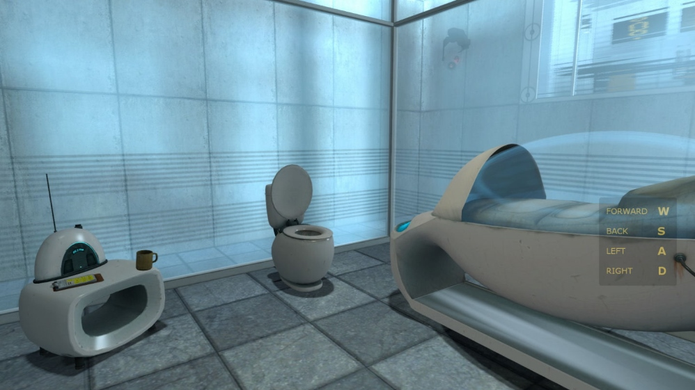
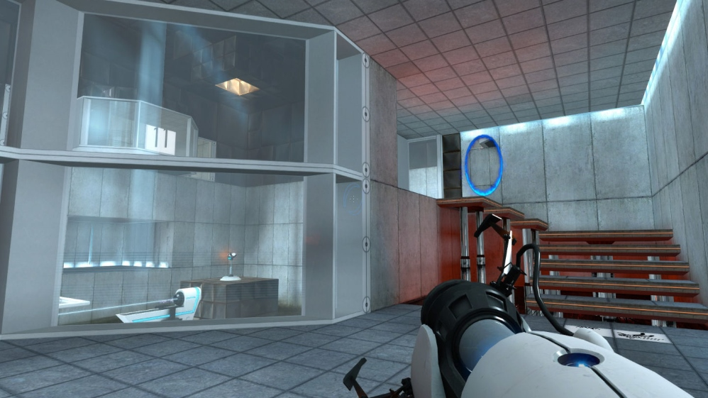
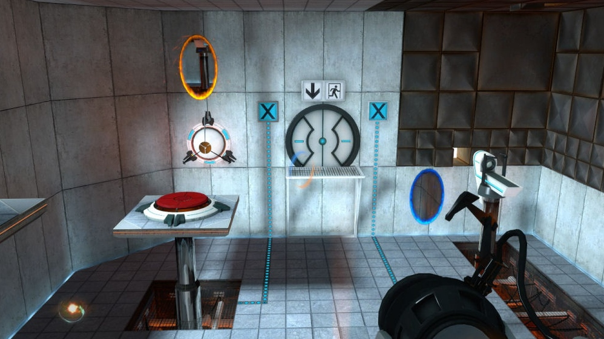
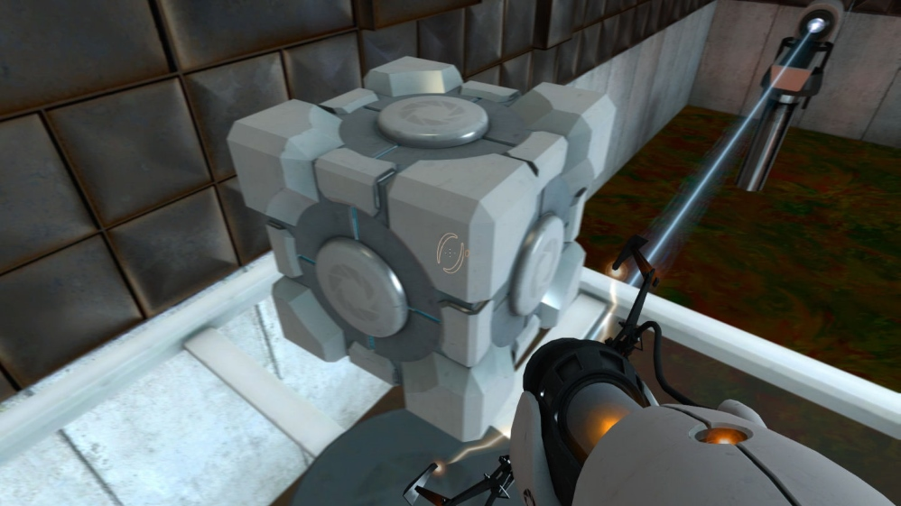

Заголовок рішив не мінять бо він впринципі і так доволі прикольний. Але содєржиме обзора прийдеця переписать.
Якшо ви тіпа рішили почитать обзор на ігру яка вийшла 10 год назад і узнать чи стоє її куплять то я вам сразу скажу шо стоє.
Її разработали ті чуваки шо сделали халву. А Халву люблять усі кромє тих у кого нема вкусових рецепторів.
Но еслі хочте почитать трохи суржика і попутно може поржать то ласкаво просю дальше.
Купив када-то такий бандл як Orange Box і там була втора Халва і ще пару ігр. Среді яких була і ця. Но я був заінтересований тільки в Халві так шо ця осталась без вніманія. Но в один вечів все ізмінилося. В ту ніч я ліг спать часа в три ночі.

Начінаєця ігра... главну героїню буде якись старий матюгальник шо грає якийсь мексиканський хіт. Начало для нашої героїні таке собі, но дальше - хуже. Шо ж може буть хуже чим проснуця от матюгальника з будуна. Це проснуця от матюгальника в якомусь стрьомному отрєзвітелі де тобі говоруть шо не нада сувать руки під лазєр, чи сувать іх в розєтку. Ладно би це казав хто-то в халаті чи тіпа того. Нє це говорє роботоголос через рупор. Зразу стає понятно шо тут шось не чисто и вообще ти походу подопитний кролік і нічого хорошого тебе не жде.

З атмосфєрою розібрались - вона отлічна, стрьомна но отлічна теперь про графон. На свій возрасть він отлічний, глаза не то шо не вилазили вони реально получали удовольствіє. Для мене цього достаточно. А тепер ви спросите тіпа Дімон, а шо там з саундтреком. Ну саундтрека тіпа музикального почті не чуть, но коли чуєшь то звук прикольний. Мені понравилось. Всьо соответствує атмосфєрі.

Тепер значіть сама ігра. Ігра це тіпа пазли розбиті на якесь колічество комнат. В каждой комнаті свій прикол. Шоб комнату пройти нада правільно іспользовать портали. Як нам і намікає названіє ігри. Там походу дадуть ручний портало-дирко-создаватєль. Там розберетесь там не сложно впринципі. В людей чи роботів стрілять не нада, но нада думать головой. Протівніки там єсть, но не такі як ви привикли.
Дальше розказувать нема смисла бо уже підуть спойлери а кому це нада.
Сюжета тут особого нема, но ігра не просто набір пазлів, там є про шо подумать. Чуствуєця що мєжду героїньою і голом із рупора є отношенія і походу ігри ви поймете шо я маю ввіду.

Ігра мені дуже понравилась і я хотів би вас реально убідить в неї поіграть. Отзиви на Стімі реально позітівні, но вона не дуже длінна. Часов п'ять десь. Но я наіграв почті 30 кажиця бо получав ачівки.
Подписуйтесь на куратора ілі на фейсбук шоб получать нові обзори.
Перейти до обговорення у групі
Реклама